[Auto]Stitching Photo Mosaics
CS 180 Project 4
Part A: Image Warping and Mosaicing
Part A of this project was hard!! But I enjoyed getting to mess around with looking at image warps. Homographies are interesting! It was fun to
have linear algebra come into play.
A.1: Shoot the Pictures
I walked around near Gateway and took pictures of nearby buildings. I also took a picture of my room when I started on the project. Most of the images have a left<->right rotation between them, so I took one of a light pole where I did an up<->down rotation.
VLSB
Li Ka Shing & Anchor House
My room
A.2: Recover Homographies
System of equations
For each correspondence (x1, y1) → (x2, y2), I fix h33 = 1 and set up the following system of equations:
[ −x1 −y1 −1 0 0 0 x2*x1 x2*y1 ] h = −x2
[ 0 0 0 −x1 −y1 −1 y2*x1 y2*y1 ] h = −y2
h = [h11, h12, h13, h21, h22, h23, h31, h32]ᵀ
h = argmin ||Ah − b||²Then, with N correspondences, I stack those two rows over and over again. I used 6 correspondence points, which makes the system overdetermined. To solve, I use for Ah = b using least squares. Then, with my 8 estimated values for H, I can reshape them into a 3x3 matrix and fill in the bottom right corner as 1.
My implementation of computeH:
def computeH(im1_pts, im2_pts):
#a1: -x1, -y1, -1, 0, 0, 0, (x2/z2)*x1, (y2/z2)*x1
#a2: 0, 0, 0, -x1, -y1, -1, (y2/z2)*x1, (y2/z2)*y1
# solve Ah = b
#im1_pts: Nx2, im2_pts: Nx2
N = im1_pts.shape[0]
A = np.zeros((2*N, 8))
b = np.zeros(N*2)
for i in range(N):
x1, y1 = im1_pts[i]
x2, y2 = im2_pts[i]
A[2*i] = [-x1, -y1, -1, 0, 0, 0, x2*x1, x2*y1]
A[2*i+1] = [0, 0, 0, -x1, -y1, -1, y2*x1, y2*y1]
b[2*i] = -x2
b[2*i+1] = -y2
# solves Ah = 0 with linear least squares
h, res, rank, s = np.linalg.lstsq(A, b)
#reshape to 3, 3 and fill in bottom right conrer
H = np.append(h, 1).reshape(3, 3)
return HSelecting correspondences
I wrote a script using plt.ginput to select correspondences and save them as arrays. I mostly picked spots that were distinct corners or easy for me to remember when I had to re-click them on the second image.
VLSB correspondences
Recovered homography: VLSB image 1 → image 2
Here is the recovered homography matrix that my code printed for the VLSB correspondences:
H = [[ 1.44561155, −0.00606915, −1225.48942 ],
[ 0.18716109, 1.28609506, −480.43394 ],
[ 0.00010725, 0.00000668, 1.00000 ]]Lightpole correspondences
LKS & Anchor House correspondences
A.3: Warp the Images
I implemented image warping using inverse warping! Remembering to work with homogeneous coordinates and keep track of the difference between x and y and height and width was difficult at times. I implemented nearest-neighbor and bilinear interpolation. Nearest-neighbor interpolation fills the pixel with the value of the nearest pixel in the source image, while bilinear interpolation takes a weighted average of the 4 nearest pixels, weighted based on the distance to each of those pixels. Here is my code:
#inverse warping
def warpImageNearestNeighbor(im1, im2, H):
inv_H = np.linalg.inv(H)
# for each pix in im2, find the nearest pix in im1
h1, w1 = im1.shape[:2]
h, w = im2.shape[:2]
target = np.zeros_like(im2)
mask = np.zeros((h, w))
for i in range(h):
for j in range(w):
# x, y, z
im2_pts = np.array([j, i, 1])
im1_pts = inv_H @ im2_pts
# find correspodning point in im1 and unscale by z (homogeneous)
im1_x = round(im1_pts[0] / im1_pts[2])
im1_y = round(im1_pts[1] / im1_pts[2])
# grab points that actually exist
if 0 <= im1_x < w1 and 0 <= im1_y < h1:
target[i, j, :] = im1[im1_y, im1_x, :]
mask[i, j] = 1
return target, mask
def warpImageBilinear(im1, im2, H):
inv_H = np.linalg.inv(H)
# average adjacent neighbors in im1
h1, w1 = im1.shape[:2]
h, w = im2.shape[:2]
target = np.zeros_like(im2)
mask = np.zeros((h, w))
for i in range(h):
for j in range(w):
# x, y, z
im2_pts = np.array([j, i, 1])
im1_pts = inv_H @ im2_pts
# find correspodning point in im1 and unscale by z (homogeneous)
im1_x = im1_pts[0] / im1_pts[2]
im1_y = im1_pts[1] / im1_pts[2]
# grab points that actually exist
# find distance to nearest pixels and interpolate
if 0 <= im1_x < w1 - 1 and 0 <= im1_y < h1 - 1:
x1, y1 = int(np.floor(im1_x)), int(np.floor(im1_y))
x2, y2 = x1 + 1, y1 + 1
dx = im1_x - x1
dy = im1_y - y1
out = dx*dy*im1[y2, x2, :] + dx*(1-dy)*im1[y1, x2, :] + (1-dx)*dy*im1[y2, x1, :] + (1-dx)*(1-dy)*im1[y1, x1, :]
target[i, j, :] = out
mask[i, j] = 1
return target, mask
VLSB: Nearest Neighbor vs. Bilinear
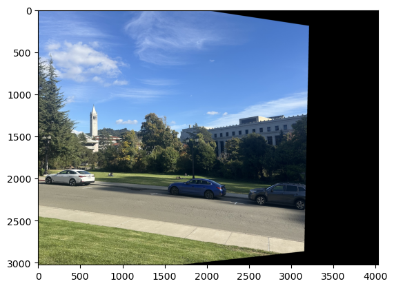
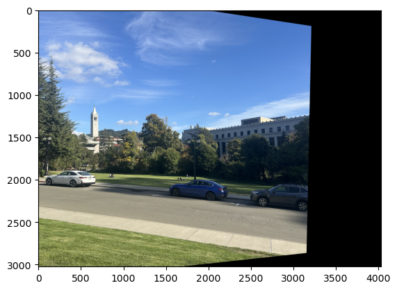
Anchor: Nearest Neighbor vs. Bilinear
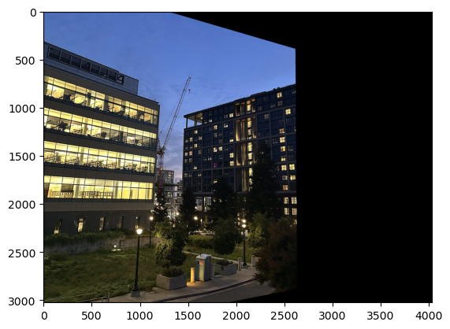
Speed and quality
Generally, the quality of bilinear interpolation is better, which makes sense since it incorporates more information about the true surroundings of a pixel. However, it does take slightly longer to run, which creates the runtime vs. quality tradeoff.
Rectification: Mondrian
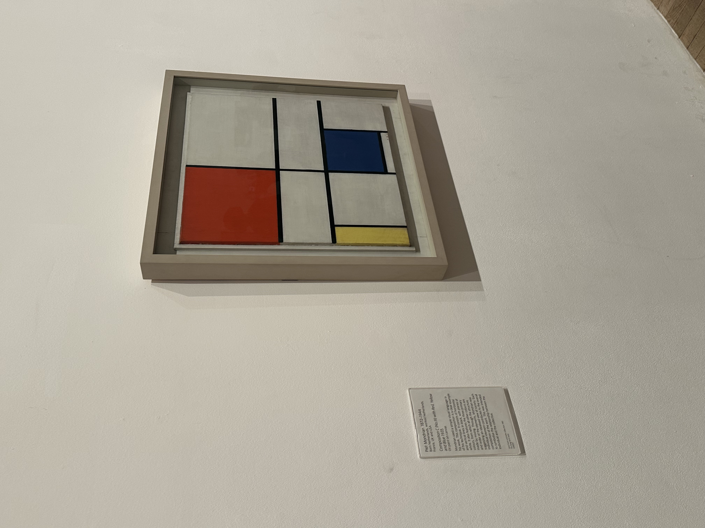
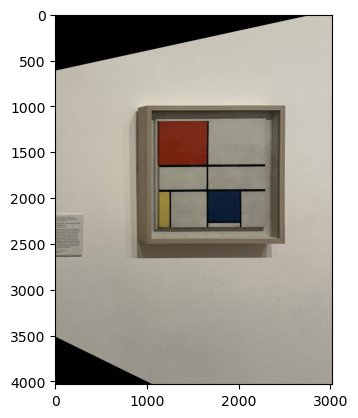
Here's a piece of art I saw in London this summer. Using my homography calculation and warping functions, I rectified it into a square!
Rectification: Star Wars
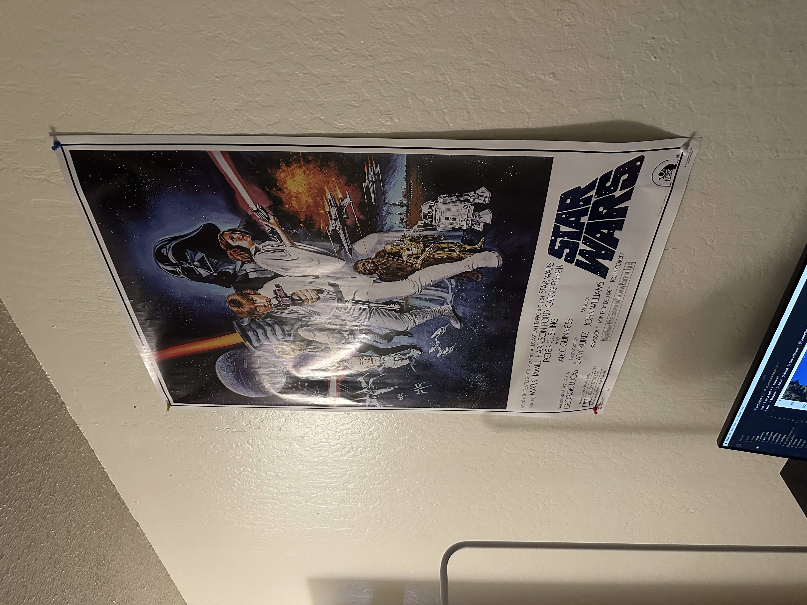
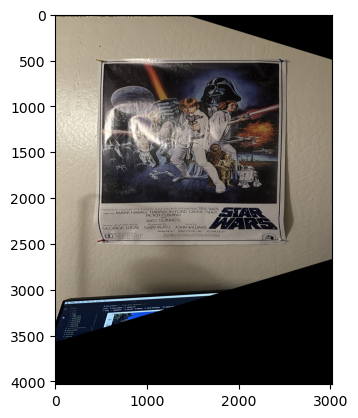
This is the Star Wars poster above my desk. Now it looks like Luke is going to shoot the viewer. AAAH!
A.4: Blend Images into a Mosaic
Finally, I took my original images and used the warping code I had to create image mosaics! All my mosaics are panoramas. First I mapped the two source images onto a shared canvas. I did this by calculating the homography for one image, using the location of the warped corners and the size of the other image to create a full canvas, and then adding a translation before my warp to make sure the warped image lands fully on my canvas without getting cut off. In order to minimize boundary effects and blend the two images together smoothly, I used distance-based blending. My warping function returns a mask that identifies where there are valid image pixels. I transformed the masks to encode the distance from the boundary. This let me do a feathered averaging between the images in the regions where they overlapped when I combined everything on the canvas.
Lightpole
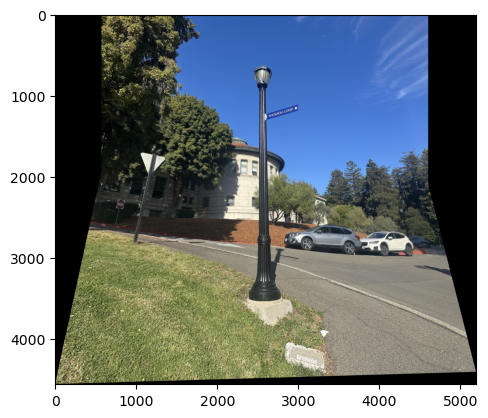
Mosaic 2: VLSB
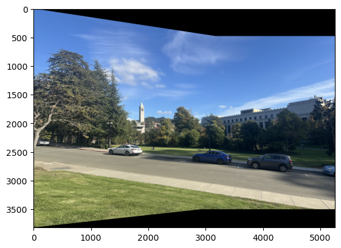
Mosaic 3: LKS & Anchor House
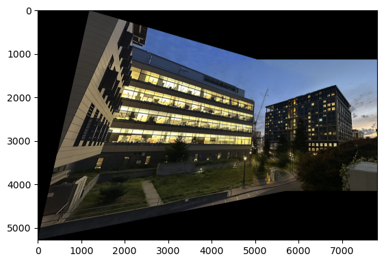
Mosaic 4: My Room
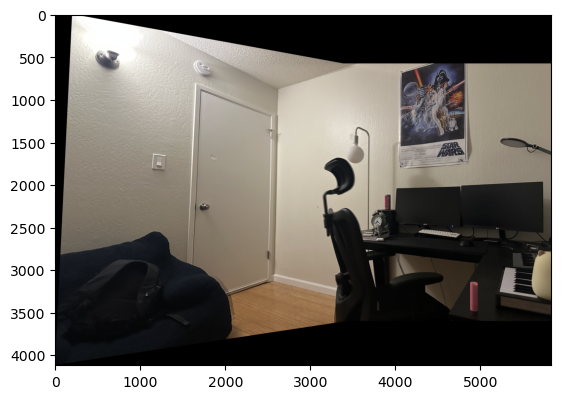
Part B: Feature Matching for Autostitching
Part B was also very fun! The objective of part B is to implement an automatic feature matching protocol for image stitching and mosaic generation. The approach was a simplified version of the methods described in Multi-Image Matching using Multi-Scale Oriented Patches. It was pretty enjoyable to translate from the paper to actual runnable code. I found that I ended up writing some very pretty code, especially for ANMS and RANSAC!
B.1: Harris Corner Detection
A first idea is to match corners between images, since corners often define object boundaries and can describe distinct, recognizable locations that we want to align when our images are stitched together. To do so, I used the Harris corner detection algorithm (or at least, the provided implementation). The Harris algorithm works by taking the gradient at each point in the image and searching for points where there are rapid changes in all directions. Intuitively, these points are likely to correspond to corners! Here's what that looks like.
LKS & Anchor House
Original Harris corners
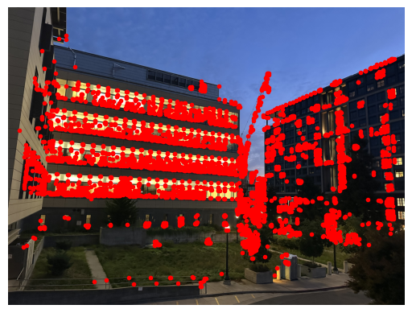
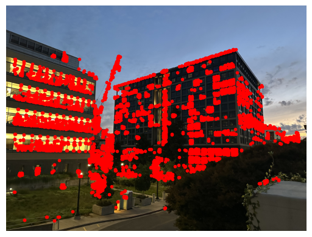
It turns out that the Harris algorithm gives us a lot of "corners" that aren't actually corners, and we also might end up with corners that are densely packed into one region of the image if we just pick the top K corners to work with. To remedy this, I implemented Adaptive Non-Maximal Suppression as described in the MOPS paper. ANMS works by finding an effective "maximum radius" for each point. This radius describes the size of the region surrounding the point in which the point is the most corner-like. I liked to think of it as the "territory" claimed by a point, if the size of a point's territory is defined by how much more corner-like it is than surrounding points. Then, we pick the top K corners with the largest territories! Here's how that looks. Now, we have nicely spaced out corners covering the whole image! For this image, I used K = 500.
After ANMS
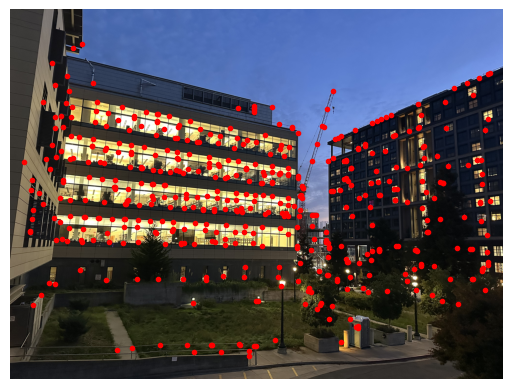
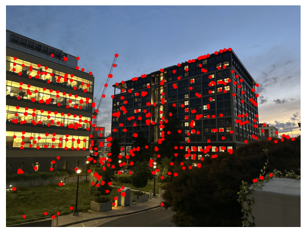
Here are the same results but for two views of my room instead. For this I used K=250.
My room
Original Harris corners
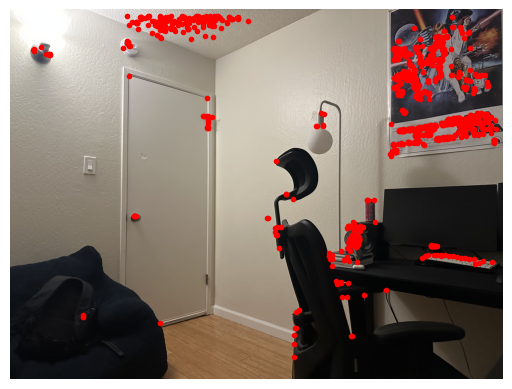
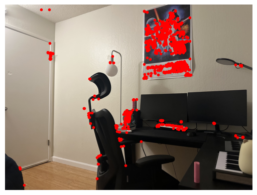
After ANMS
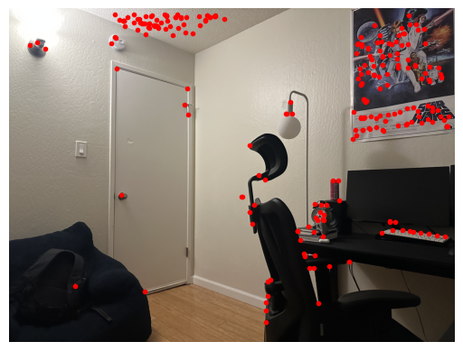
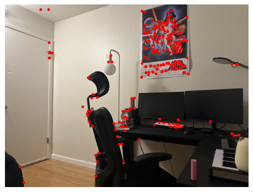
B.2: Feature Descriptor Extraction
Once we have our corners from ANMS, we want to build a meaningful feature out of them that we can use to compare two images. Single points alone are very hard to map between images. The strategy introduced by MOPS is to construct a feature that describes the general structure of the surroundings of the corner. Intuitively, two corresponding corners in two different images are going to have surroundings that are very similar.To construct the features, I start by grabbing a 40x40 region around each ANMS corner. Then, I gaussian blur this image patch and sample it at an interval of every 5 pixels to create an 8x8 feature. The blurring is to ensure that there is no aliasing when we do the subsampling. This construction allows us to describe the general neighborhood of a corner, which is more robust to noise or small fluctuations between images compared to the direct 8x8 surroundings.
Here are the features extracted from the LKS & Anchor House image. It's cool to me that you can see the corner-like structure in most of them.
B.3: Feature Matching
Here comes the fun stuff. Now I have a way to describe features of interest in two images, and I have to actually map between them. The core idea is a nearest-neighbors search: for a feature in one image, find the most similar feature in the other! However, we find that this doesn't always work too well in practice, since some features may not correspond very strongly with any features in the other image. The MOPS paper handles this by instead keeping corners for which the ratio (distance_to_nearest_neighbor / distance_to_second_nearest_neighbor) < epsilon, for some epsilon. The idea is that matching features will match very closely with each other and not very well with other features, so this ratio will be very small for true matches. Consulting the figures from the paper, I set this threshold to be in between 0.5 to 0.7, depending on the image, in order to maximize the number of true matches selected and minimize the number of false matches kept.Here are the matched corners for LKS and my room, along with the matched features. The algorithm is doing a great job at finding close matches! It's easy to see that the matches are in the same location in the image and have almost identical features, as hypothesized.
LKS & Anchor House
Matched feature descriptor pairs
My room
Matched feature descriptor pairs
B.4: RANSAC for Robust Homography
We are done!!!Actually not quite. Awh man. It turns out that the feature matching procedure is still not perfect and can often give bad/incorrect matches. It's always possible to have corners which have high feature similarity but are spatially disjoint if the image has repeated or uniform structure.
The final step before calculating the homography and making the mosaic is RANSAC, or Random Sample Consensus. The idea was best described by Prof. Efros in lecture (and Tolstoy before him): "All happy families are alike; each unhappy family is unhappy in its own way." With our potential matches, we will have "happy family" points which all relate to each other in the same way (meaning they are all related by the same homography). The "unhappy family" points are the outliers, which are related through completely different and often meaningless homographies.
To find the outliers, we sample 4 matches at random. We calculate the homography using these 8 points, then apply it to every single potential match. We count the number of corners that, after transformed, are within an error epsilon of their predicted match (these are the inliers). We do this for K steps, and at the end of every step, we store the size of the largest set of inliers and the inliers themselves. Hopefully, at the end, we now have a set of all the inliers! We've now filtered out the outliers succesfuly and can re-calculate our final homography using least squares on our set of inliers. Ta-da!! Now we are actually done and can stitch our images.
Here are my potential matches alongside the inliers found by RANSAC. I set my epsilon to values ranging between 1 and 3, depending on the image. For these small values, we often have corners which are actually inliers counted as outliers by the algorithm. In practice, this is fine, since it means these matches are just not as good as other matches, and when solving our least squares system for our homography, we will want to use only the best matches.
LKS & Anchor House: Inliers in RED, Outliers in YELLOW
My room: Inliers in GREEN, Outliers in RED
Final Mosaics
Now I'm actually done!! To calculate the final mosaics I reused my code from part a, using bilinear interpolation for inverse warping.LKS & Anchor House
My room
VLSB
Lightpole
Automatic vs. Manual Stitching
Let's see what all that work actually got me. Here are comparisons of my part a mosaics, which were done with manual correspondence selection, with my automated part b mosaics. I zoomed into regions with details for closer comparison.VLSB
Looks like the work was worth it! The difference is pretty minimal, but the detail in the trees is definitely clearer and less blurry with the automatic stitch.
LKS & Anchor House
Again, the automatic stitch is much less blurry in the trees and overall does a better job at putting the two images together.
My room
Automatic wins again! Look at the detail in the headrest on my chair. It's slightly crisper with the automatic.
Lightpole
Awh man. It actually seems like the manual one did better here! But this just means the automatic approach can be improved. There were a lot of thresholds and parameters I chose in every single step of the pipeline, and it's possible that different choices would have led to a cleaner projection. The method I implemented is also currently only single scale, not multi-scale as advertised, and is not oriented (also not as advertised), while the MOPS paper includes these features (along with a few other interesting ideas). My guess is that including some of these bells and whistles will take the automatic stitching far beyond any manual approaches.